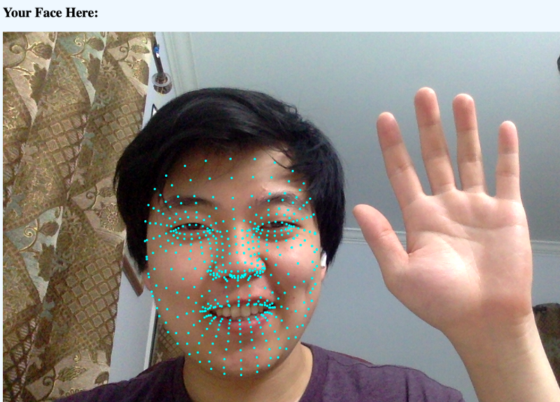

Face Mesh Demos
Hello! This is the access point for three web demos of Media Pipe's Face Mesh, a cross-platform face tracking model that works entirely in the browser using Javascript. Each demo is explained in detail in the Medium post here.

Note: To use the demos, you'll need to enable your camera. These demos should work on both mobile and desktop browsers, but will run better on the desktop. IF USING AN iPHONE, TURN OFF WebGL2.0, it kills mobile performance in Safari.
Demos:
- Dotted Landmarks | Basic example showing where the detected landmarks are on the face.
- Labeled Landmarks | Same as above example, but the landmarks have their indices written beside them.
- Snapchat Filter | Scaling, flipping, and other image manipulations in the browser using Tensorflow.JS
- Webcam Heartrate Monitor (Photoplethsymography) | Averaging your camera's pixels to calculate heartrate from your face flushing with every beat. Works best with lower screen brightness.